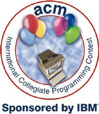

|
The ACM International Collegiate
|
Place University Solved Minutes
1 Charles U - Prague 6 919
2 St. Petersburg Univ. 6 1021
3 U Waterloo 6 1026
4 U Umeå - Sweden 6 1073
5 MIT 6 1145
6 Melbourne U 6 1153
7 Tsing Hua U - Beijing 5 743
8 U Alberta 5 758
9 Warsaw U 5 780
10 Politehnica U Bucharest 5 813
11 UC Berkeley 5
11 Nanyang TU - Singapore 5
11 St. Petersburg IFMO 5
11 Duke University 5
11 Virginia Tech 5
11 Shanghai Jiaotong U. 5
17 McGill Poutines 4
17 National Taiwan U 4
17 Sofia University 4
17 Moscow State U 4
17 U Texas - Austin 4
17 Caltech 4
17 Ural State TU 4
24 Case Western 3
24 BUET, Bangladesh 3
24 Stanford U 3
24 PUC Rio de Janeiro 3
24 Shanghai Univ. 3
29 Comenius U 2
29 University of Ulm 2
29 U Auckland 2
29 Harding University 2
29 Florida Tech 2
29 U Missouri-Rolla 2
29 U. Minnesota - Morris 2
29 Binus U.-Indonesia 2
29 U Central Florida 2
29 Darmstadt UT 2
29 NTNU - Taiwan 2
29 ITESM 2
Honorable Mention:
Christopher Newport U South Dakota State U
Harvey Mudd South Dakota Tech
IUP U Arkansas - Fayetteville
Kyoto U - Japan U Dayton
North South U - Bangladesh U Pacific Tigers
Oklahoma State U U Texas - Arlington
SUNY Stony Brook University of Miami